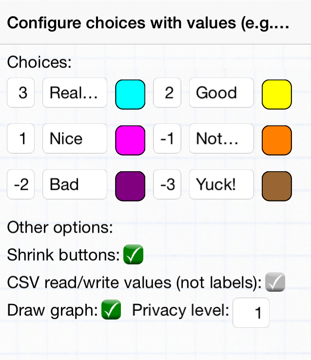

- The button labels are in order left-to-right, top-to-bottom
(first and second buttons are the top row). To have fewer
buttons, set fewer labels.
- The numbers to the left of the labels are the values for each
button. These will be shown in the graph and reported in the CSV
output (according to the option below). If no values are set,
the defaults are 1 to 6.
- The colors are the colors of the graph dots shown for each
choice; tap the color squares to cycle through the options.
- 'Shrink buttons' will adjust the button sizes to match the
labels as shown in this example; the alternative is for all
buttons to have equal width.
- 'CSV read/write values' will associate the numbers associated
with each button (the values described above) with the button
choices for the CSV output file, and when reading a CSV data
file. The alternative is to have the full button title in each
row of the CSV file instead.
|

|